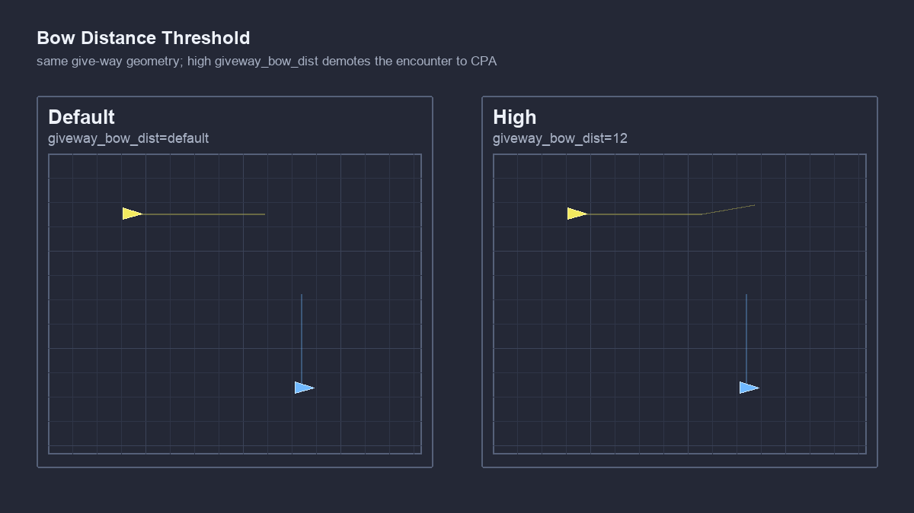
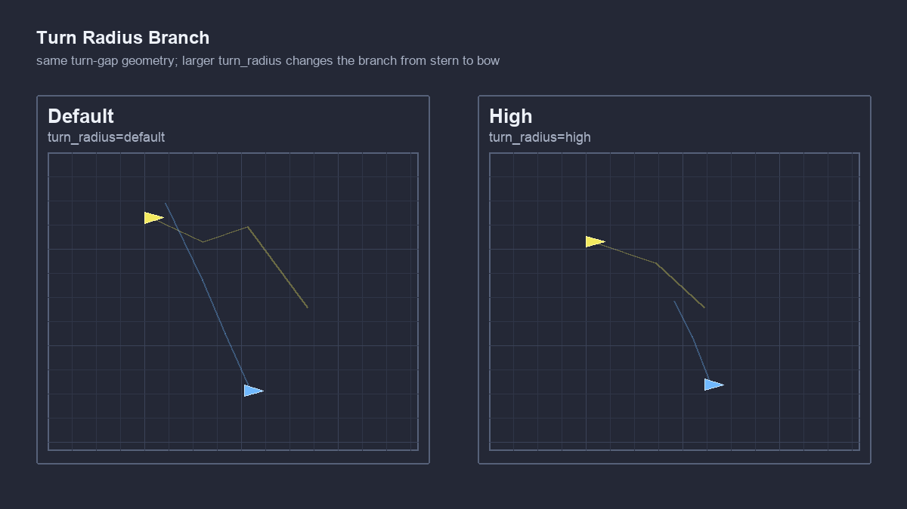

Stem Mission
Baseline scenario context
The shared COLREGS stem mission uses two vessels, ben and abe; ben is the evaluated ownship. Parameter cases keep the encounter setup stable while changing one behavior setting at a time.
COLREGS
Parameter-regression tests for BHV_AvdColregsV22. These cases vary one tuning knob at a time while holding trusted geometry steady, verifying expected stability or one deliberate behavioral change.
Stem Mission
The shared COLREGS stem mission uses two vessels, ben and abe; ben is the evaluated ownship. Parameter cases keep the encounter setup stable while changing one behavior setting at a time.
Examples


Case Matrix
min_util_cpa_low_pass
Runs fixed stand-on geometry with low min_util_cpa_dist; expected classification should remain on the low/default CPA-distance side.
min_util_cpa_default_pass
Runs the same fixed stand-on geometry with default min_util_cpa_dist; expected classification should match the baseline.
min_util_cpa_high_pass
Runs the same fixed stand-on geometry with high min_util_cpa_dist; expected classification should shift to the higher CPA-distance branch.
headon_only_false_pass
Runs crossing geometry with headon_only=false; the non-head-on encounter should still be admitted as give-way.
headon_only_true_pass
Runs the same crossing geometry with headon_only=true; the non-head-on encounter should be demoted to CPA.
giveway_bow_dist_default_pass
Runs fixed give-way bow-distance geometry with the default threshold and expects the stock give-way bow classification.
giveway_bow_dist_high_pass
Runs the same geometry with high giveway_bow_dist; expected classification should reflect the widened bow-distance threshold.
max_util_cpa_default_pass
Runs fixed stand-on geometry with default max_util_cpa_dist; expected classification should match the baseline.
max_util_cpa_high_pass
Runs the same geometry with high max_util_cpa_dist; expected classification should move to the higher CPA envelope branch.
velocity_filter_off_pass
Runs fixed stand-on geometry with velocity filtering off; expected classification should match the unfiltered baseline.
velocity_filter_on_pass
Runs the same geometry with velocity filtering on; expected classification should show the filter's effect on CPA evaluation.
eval_tol_default_pass
Runs fixed overtaking geometry with default eval_tol; expected execution quality should remain in the baseline CPA band.
eval_tol_short_pass
Runs the same overtaking geometry with short eval_tol; expected execution quality should widen as configured.
eval_tol_long_pass
Runs the same overtaking geometry with long eval_tol; expected execution quality should remain stable.
pwt_outer_dist_default_pass
Runs fixed range-gate geometry with default pwt_outer_dist; expected relevance should match the stock gate.
pwt_outer_dist_high_pass
Runs the same range-gate geometry with high pwt_outer_dist; expected relevance should admit COLREGS behavior earlier.
pwt_inner_dist_low_pass
Runs fixed stand-on geometry with low pwt_inner_dist; expected posted priority weight should follow the low inner-distance band.
pwt_inner_dist_default_pass
Runs the same geometry with default pwt_inner_dist; expected posted priority weight should match the baseline curve.
pwt_inner_dist_high_pass
Runs the same geometry with high pwt_inner_dist; expected posted priority weight should move toward the saturated band.
pwt_grade_linear_pass
Runs fixed relevance geometry with pwt_grade=linear and checks the linear priority-weight curve.
pwt_grade_quasi_pass
Runs fixed relevance geometry with pwt_grade=quasi and checks the quasi priority-weight curve.
pwt_grade_quadratic_pass
Runs fixed relevance geometry with pwt_grade=quadratic and checks the quadratic priority-weight curve.
pts_port_turns_ok_true_pass
Runs fixed give-way geometry with pts_port_turns_ok=true and checks the early side relationship.
pts_port_turns_ok_false_pass
Runs the same give-way geometry with pts_port_turns_ok=false and checks that the early side relationship flips as expected.
turn_radius_default_pass
Runs fixed give-way turn-gap geometry with default turn_radius; expected classification should match the stock branch.
turn_radius_high_pass
Runs the same geometry with high turn_radius; expected classification should flip to the high-radius branch.
check_plateaus_false_pass
Runs CPA fallback geometry with check_plateaus=false; refinery diagnostics should remain at their initialized values.
check_plateaus_true_pass
Runs the same geometry with check_plateaus=true; refinery diagnostics should post the expected plateau/basin signature.
completed_dist_default_pass
Runs CPA fallback geometry with default completed_dist; the encounter should already be complete at the shared checkpoint.
completed_dist_high_pass
Runs the same geometry with high completed_dist; the encounter should still be active at the shared checkpoint.
refinery_on_pass
Runs CPA fallback geometry with refinery enabled; classification should remain CPA while diagnostics are posted.
refinery_off_pass
Runs the same geometry with refinery disabled; classification should remain CPA while refinery diagnostics stay initialized.